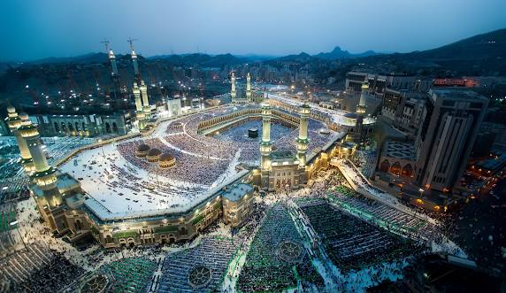
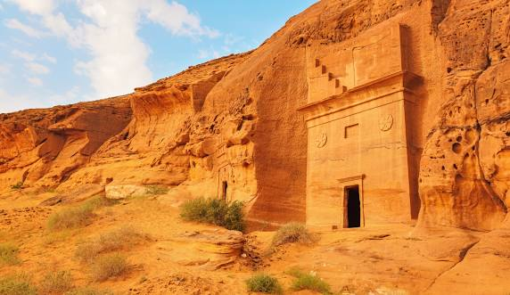
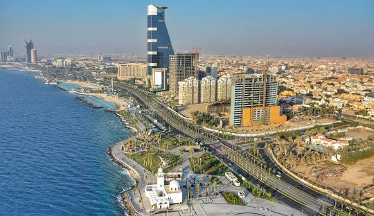
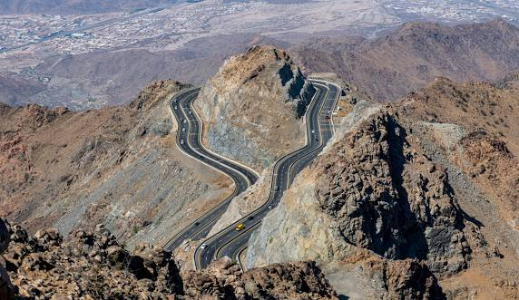

The Great Mosque of Mecca (Al-Masjid Al-Haram), the holiest site in Islam, showing the Kaaba during prayer time.

Historic mountain village in Saudi Arabia, showcasing traditional architecture illuminated at dusk.

Madain Saleh (Hegra), a UNESCO World Heritage site featuring ancient Nabataean rock-cut architecture.

Jeddah Corniche with its modern skyline and waterfront, featuring the iconic Kingdom Centre.

The pristine waters of the Red Sea coast, showing vibrant coral reefs and crystal-clear waters.

Spectacular mountain road showcasing Saudi Arabia's dramatic terrain and engineering achievements.